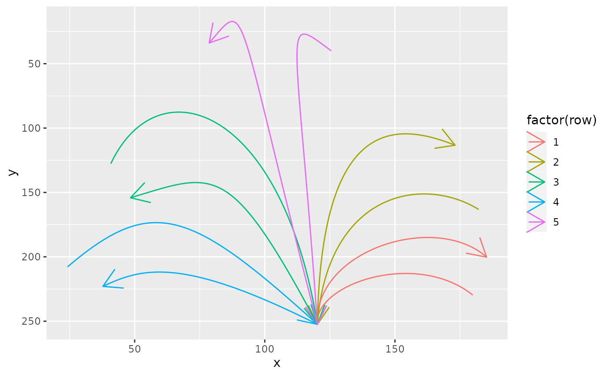
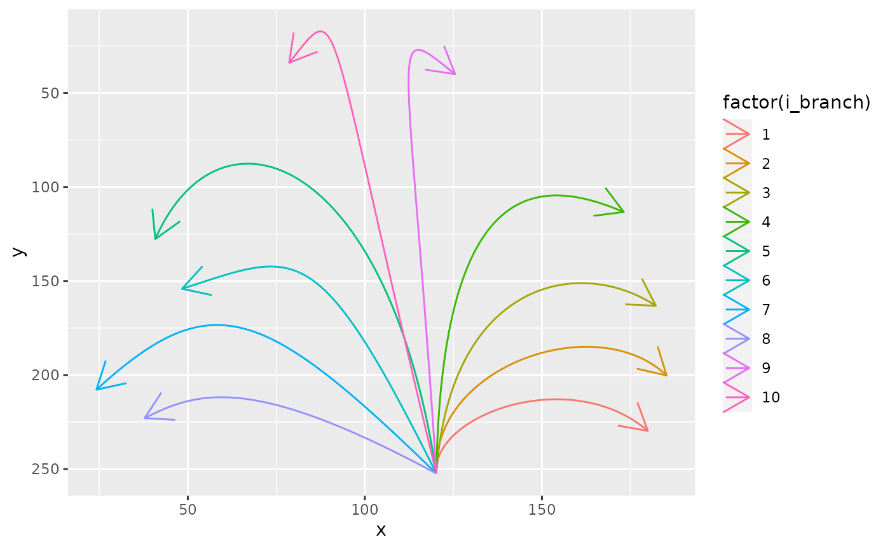

import_svg_bezier.RmdHacky and a bit off-topic…
This vignette shows how you can import bezier path data from an svg file and then transform the format to the one needed by ggforce::geom_bezier(). Unless you really want to import bezier pathes from your svg file s, it might not be of huge interest. What’s cool is that you can then draw pathes with svg software such as inkscape. The resulting dataframe df_bezier_skeleton of this vignette is also included in the package. If you’re not interested in importing shapes from svg files you can just have a look how this data can be used in vignette("create_benjamini_svg") very result in a data frame of the svg file
library(ggbenjamini)
library(dplyr)
#>
#> Attaching package: 'dplyr'
#> The following objects are masked from 'package:stats':
#>
#> filter, lag
#> The following objects are masked from 'package:base':
#>
#> intersect, setdiff, setequal, union
library(purrr)
library(tidyr)
library(ggplot2)
library(ggforce)
library(minisvg)There is an svg file included in the package that will serve as a skeleton of branches that we’ll grow the leaves on (This file was created with inkscape and then transformed with svgcairo to be in the needed format for the following code.). Let’s import it:
svg_skeleton <- system.file("extdata", "branch_skeleton.svg", package = "ggbenjamini")Next we’ll load the svg object and extract the bezier curves into a dataframe df_svg_skeleton:
svg_doc <- parse_svg_doc(svg_skeleton)
# you can descend in the elements of the object and find the part you're
# interested in. For this file we can extract our bezier pathes with:
pathes <- svg_doc$child$g[[1]]$child$path
path_strings <- map_chr(pathes, ~.x$attribs$d)
df_raw <- tibble(s = path_strings) %>%
mutate(row = row_number()) %>%
# separate the 2 parts of each curve
separate_rows(s, sep = "(?=[mMcC] )") %>%
filter(s != "") %>%
separate(s, c("svg_point_type", "coords"), sep = " ", extra = "merge") %>%
separate_rows(coords, sep = " ") %>%
filter(coords != "") %>%
mutate(coords = as.numeric(coords)) %>%
mutate(i = ifelse(row_number() %% 2 == 1, "x", "y")) %>%
pivot_wider(values_from = coords, names_from = i) %>%
unnest(x, y)
#> Warning: Values are not uniquely identified; output will contain list-cols.
#> * Use `values_fn = list` to suppress this warning.
#> * Use `values_fn = length` to identify where the duplicates arise
#> * Use `values_fn = {summary_fun}` to summarise duplicates
#> Warning: unnest() has a new interface. See ?unnest for details.
#> Try `df %>% unnest(c(x, y))`, with `mutate()` if needed
split_beziers <- function(df_bezier) {
if (!nrow(df_bezier) != 4 | !(nrow(df_bezier) - 1) %% 3 == 0) {
stop("urgh")
}
if (nrow(df_bezier) > 4) {
n_others <- (nrow(df_bezier) - 4) / 3
other_rows <- map(1:(n_others+1), ~ 1:4 + (.x - 1) * 3) %>% unlist()
res <- df_bezier[c(other_rows),] %>% mutate(i_curve = rep(1:(n_others+1), each = 4))
}
if (nrow(df_bezier) == 4) {
res <- df_bezier
}
res
}
(df_svg_skeleton <- df_raw %>%
group_by(row) %>%
summarise(split_beziers(cur_data()))
)
#> `summarise()` has grouped output by 'row'. You can override using the `.groups` argument.
#> # A tibble: 40 × 5
#> # Groups: row [5]
#> row svg_point_type x y i_curve
#> <int> <chr> <dbl> <dbl> <int>
#> 1 1 M 180. 230. 1
#> 2 1 C 158. 194. 1
#> 3 1 C 119. 221. 1
#> 4 1 C 120. 252. 1
#> 5 1 C 120. 252. 2
#> 6 1 C 119. 195. 2
#> 7 1 C 166. 165. 2
#> 8 1 C 185. 200. 2
#> 9 2 M 182. 163. 1
#> 10 2 C 160. 136. 1
#> # … with 30 more rowsLooking at the geom_bezier() plot,
df_svg_skeleton %>%
# arrange(-row_number()) %>%
ggplot(aes(x, y, group = interaction(row, i_curve), color = factor(row))) +
ggforce::geom_bezier(arrow = grid::arrow()) + scale_y_reverse()
it’s as needed, but every second bezier is pointing in the wrong direction and the bezier group indices are not very important. Let’s correct this:
df_bezier_skeleton <- df_svg_skeleton %>%
mutate(i = paste0(row, "_", i_curve)) %>%
group_by(row, i_curve) %>%
# correct direction of beziers with index i_curve == 1:
slice(ifelse(i_curve %% 2 == 1, 4:1, 1:4)) %>%
# get rid of the pairing indices of this svg file and replace with
# i_branch for each branch (only for clarity):
mutate(i_branch = cur_group_id()) %>%
ungroup() %>%
select(-row, -i_curve)Now this looks better.
df_bezier_skeleton %>%
ggplot(aes(x, y, group = i_branch, color = factor(i_branch))) +
ggforce::geom_bezier(arrow = grid::arrow()) + scale_y_reverse()
usethis::use_data()
We’ll store this dataframe in the package.
usethis::use_data(df_bezier_skeleton, overwrite = TRUE)
#> ✔ Setting active project to '/home/runner/work/ggbenjamini/ggbenjamini'
#> ✔ Saving 'df_bezier_skeleton' to 'data/df_bezier_skeleton.rda'
#> • Document your data (see 'https://r-pkgs.org/data.html')